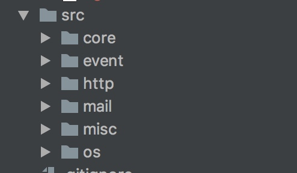

nginx作为后端程序不可缺少的中间件，凭借其优异的性能和稳定性，获得了大量的用户
目录结构

nginx的文件目录非常清晰，虽然有6个目录，但是可以归成两类，core目录存放nginx生命周期相关的函数，比如master、worker进程的创建，模块构造函数调用，核心数据结构和算法实现
其它目录主要就是存放nginx功能的扩展了、nginx几乎所有的功能都是通过扩展实现的
入口程序
src/core/nginx.c::main()
在入口程序中，nginx主要是处理了命令行参数，如果没有带参数运行nginx，则启动nginx服务器ngx_master_process_cycle(cycle
核心调用如下
- ngx_strerror_init() 初始化错误码存放链表
- ngx_get_options(argc, argv) 将命令行参数解析到全局变量
- 初始化日志系统: ngx_log_init(ngx_prefix)
- ngx_save_argv(&init_cycle, argc, argv) 保存所有命令行参数到全局变量
- ngx_process_options(&init_cycle)
给启用的nginx模块进行编号
ngx_max_module = 0;
for (i = 0; ngx_modules[i]; i++) {
ngx_modules[i]->index = ngx_max_module++;
}
- ngx_init_cycle(&init_cycle) 初始化cycle全局变量
- ngx_signal_process(cycle, ngx_signal) 对nginx master发送信号
kill()
ngx_int_t
ngx_os_signal_process(ngx_cycle_t *cycle, char *name, ngx_int_t pid)
{
ngx_signal_t *sig;
for (sig = signals; sig->signo != 0; sig++) {
if (ngx_strcmp(name, sig->name) == 0) {
if (kill(pid, sig->signo) != -1) {
return 0;
}
ngx_log_error(NGX_LOG_ALERT, cycle->log, ngx_errno,
"kill(%P, %d) failed", pid, sig->signo);
}
}
return 1;
}
- 创建pidfile ngx_create_pidfile(&ccf->pid, cycle->log)
- 启动nginx master进程 ngx_master_process_cycle(cycle)
模块/钩子机制
nginx的模块是通过在nginx运行的各个生命周期调用模块的钩子函数实现的
拿src/event/ngx_event.c:184举例
ngx_module_t ngx_event_core_module = {
NGX_MODULE_V1,
&ngx_event_core_module_ctx, /* module context */
ngx_event_core_commands, /* module directives */
NGX_EVENT_MODULE, /* module type */
NULL, /* init master */
ngx_event_module_init, /* init module */
ngx_event_process_init, /* init process */
NULL, /* init thread */
NULL, /* exit thread */
NULL, /* exit process */
NULL, /* exit master */
NGX_MODULE_V1_PADDING
};
可以看到nginx为每个模块都支持了7个钩子函数
| 回调函数 | 作用 |
|---|---|
| init master | master进程创建时调用 |
| init module | 初始化模块时调用 |
| init process | worker进程初始化时调用 |
| init thread | 未使用 |
| exit thread | 未使用 |
| exit process | worker进程退出时调用 |
| exit master | master进程退出时调用 |
事件驱动选择
nginx的事件驱动在src/event/ngx_event.c::ngx_event_core_init_conf(ngx_cycle_t *cycle, void *conf)函数中选择，核心代码如下
static char *
ngx_event_core_init_conf(ngx_cycle_t *cycle, void *conf)
{
ngx_event_conf_t *ecf = conf;
...
#if (NGX_HAVE_EPOLL) && !(NGX_TEST_BUILD_EPOLL)
fd = epoll_create(100);
if (fd != -1) {
close(fd);
module = &ngx_epoll_module;
} else if (ngx_errno != NGX_ENOSYS) {
module = &ngx_epoll_module;
}
#endif
...
ngx_conf_init_uint_value(ecf->use, module->ctx_index);
...
}
可以看到nginx默认会优先选择epoll网络事件模型进行驱动，往后才是kqueue、select，然后把最后确定使用的网络驱动模块的索引存到ecf->use这个指针中，后面就可以通过这个use指针调用nginx使用的网络库了
事件初始化函数调用
在worker进程初始化时：src/event/ngx_event.c:ngx_event_process_init()
for (m = 0; ngx_modules[m]; m++) {
if (ngx_modules[m]->type != NGX_EVENT_MODULE) {
continue;
}
if (ngx_modules[m]->ctx_index != ecf->use) {
continue;
}
module = ngx_modules[m]->ctx;
if (module->actions.init(cycle, ngx_timer_resolution) != NGX_OK) {
/* fatal */
exit(2);
}
break;
}
遍历所有模块，找出目前系统选择的网络库ngx_modules[m]->ctx_index != ecf->use，然后调用初始化函数进行初始化module->actions.init(cycle, ngx_timer_resolution)
actions结构体在src/event/ngx_event.h:ngx_event_actions_t
typedef struct {
ngx_int_t (*add)(ngx_event_t *ev, ngx_int_t event, ngx_uint_t flags);
ngx_int_t (*del)(ngx_event_t *ev, ngx_int_t event, ngx_uint_t flags);
ngx_int_t (*enable)(ngx_event_t *ev, ngx_int_t event, ngx_uint_t flags);
ngx_int_t (*disable)(ngx_event_t *ev, ngx_int_t event, ngx_uint_t flags);
ngx_int_t (*add_conn)(ngx_connection_t *c);
ngx_int_t (*del_conn)(ngx_connection_t *c, ngx_uint_t flags);
ngx_int_t (*process_changes)(ngx_cycle_t *cycle, ngx_uint_t nowait);
ngx_int_t (*process_events)(ngx_cycle_t *cycle, ngx_msec_t timer,
ngx_uint_t flags);
ngx_int_t (*init)(ngx_cycle_t *cycle, ngx_msec_t timer);
void (*done)(ngx_cycle_t *cycle);
} ngx_event_actions_t;
初始化在src/event/modules/ngx_epoll_module.c:ngx_event_module_t ngx_epoll_module_ctx
ngx_event_module_t ngx_epoll_module_ctx = {
&epoll_name,
ngx_epoll_create_conf, /* create configuration */
ngx_epoll_init_conf, /* init configuration */
{
ngx_epoll_add_event, /* add an event */
ngx_epoll_del_event, /* delete an event */
ngx_epoll_add_event, /* enable an event */
ngx_epoll_del_event, /* disable an event */
ngx_epoll_add_connection, /* add an connection */
ngx_epoll_del_connection, /* delete an connection */
NULL, /* process the changes */
ngx_epoll_process_events, /* process the events */
ngx_epoll_init, /* init the events */
ngx_epoll_done, /* done the events */
}
};
init函数指针对应调用的就是ngx_epoll_init函数了
static ngx_int_t
ngx_epoll_init(ngx_cycle_t *cycle, ngx_msec_t timer)
...
ep = epoll_create(cycle->connection_n / 2);
...
}
可以看到主要是调用epoll_create函数了，其余的网络库调用可以通过ngx_event_actions_t、ngx_epoll_module_ctx找到了
一些注意的点
本文基于nginx 1.2.0 写成，源码下载参考：http://nginx.org/download/
可以关注我的公众号、第一时间获取最新文章